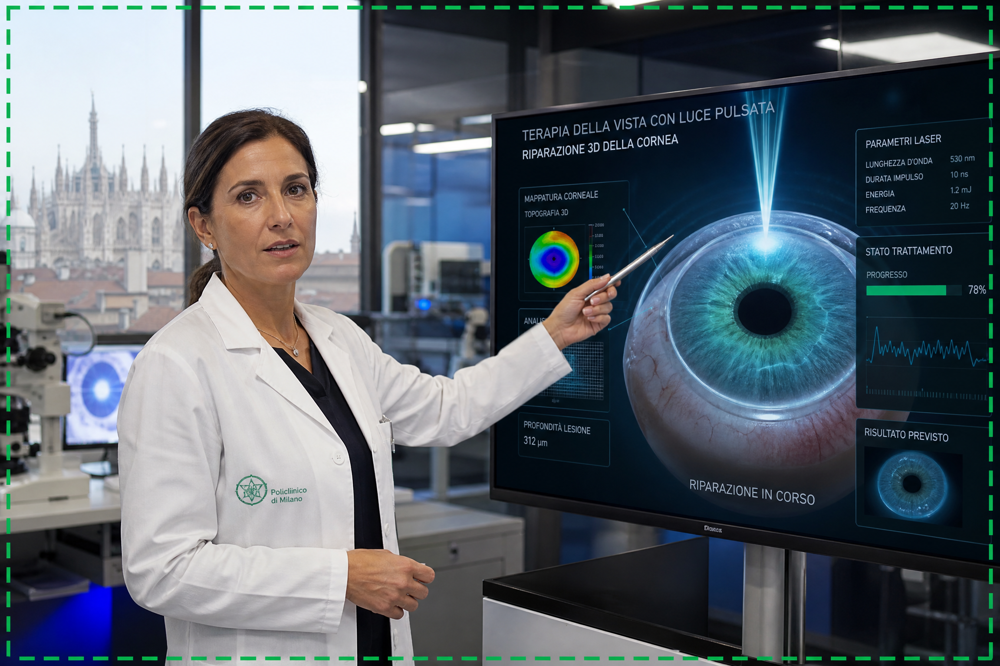

Scienziati Italiani Rivelano: La Scoperta Rivoluzionaria per una Vista Perfetta!
Un team di rinomati scienziati italiani, con sede a Milano, ha annunciato una scoperta che potrebbe cambiare per sempre il modo in cui affrontiamo i problemi di vista. Dopo anni di ricerca intensiva, hanno identificato un meccanismo cellulare chiave responsabile del deterioramento della vista, aprendo la strada a una soluzione innovativa che promette di ripristinare la chiarezza visiva in modo naturale.
SCOPRI LA RIVOLUZIONE
La Verità Nascosta Dietro la Perdita della Vista
Contrariamente alla credenza popolare, la perdita della vista non è solo una conseguenza inevitabile dell'invecchiamento. I nostri scienziati hanno dimostrato che la vera causa risiede in un malfunzionamento a livello cellulare all'interno dell'occhio. Questo malfunzionamento impedisce alle cellule di ricevere i nutrienti essenziali e di rigenerarsi correttamente, portando a una visione offuscata e alla degenerazione. Comprendere e correggere questo processo è il segreto per una vista nitida.
Immagina una vita in cui puoi leggere caratteri piccoli, riconoscere volti da lontano e goderti la bellezza del mondo che ti circonda senza limitazioni. Dove i tuoi occhi sono acuti e pieni di vita, e tu riacquisti fiducia e indipendenza. Questa è la realtà che stanno vivendo le persone che hanno beneficiato di questa scoperta italiana. Non è solo un miglioramento della vista, ma un recupero completo della qualità della vita.
GUARDA COME FUNZIONAUn Approccio Scientifico per Rigenerare la Tua Vista
Basandosi su queste scoperte, è stato sviluppato un protocollo specifico che mira direttamente alla rigenerazione cellulare dell'occhio. Questo protocollo utilizza ingredienti naturali e tecniche avanzate per aiutare le cellule oculari a recuperare la loro funzionalità ottimale, permettendo una visione chiara e duratura. È il risultato di ricerche italiane all'avanguardia, combinate con una profonda comprensione della biologia oculare.

Abbiamo preparato per te una presentazione video esclusiva, in cui il Dr. Marco Rossi e il suo team spiegano in dettaglio questo approccio rivoluzionario. Questa informazione potrebbe essere la più importante che riceverai quest'anno. Clicca sul pulsante qui sotto e guarda la presentazione ora.
GUARDA LA PRESENTAZIONE ORA